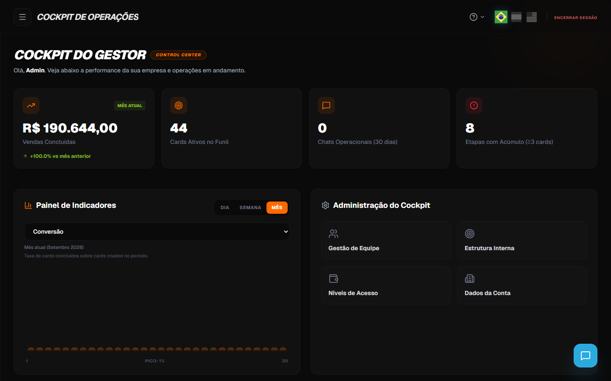
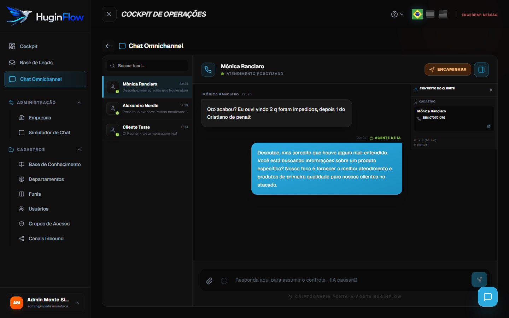
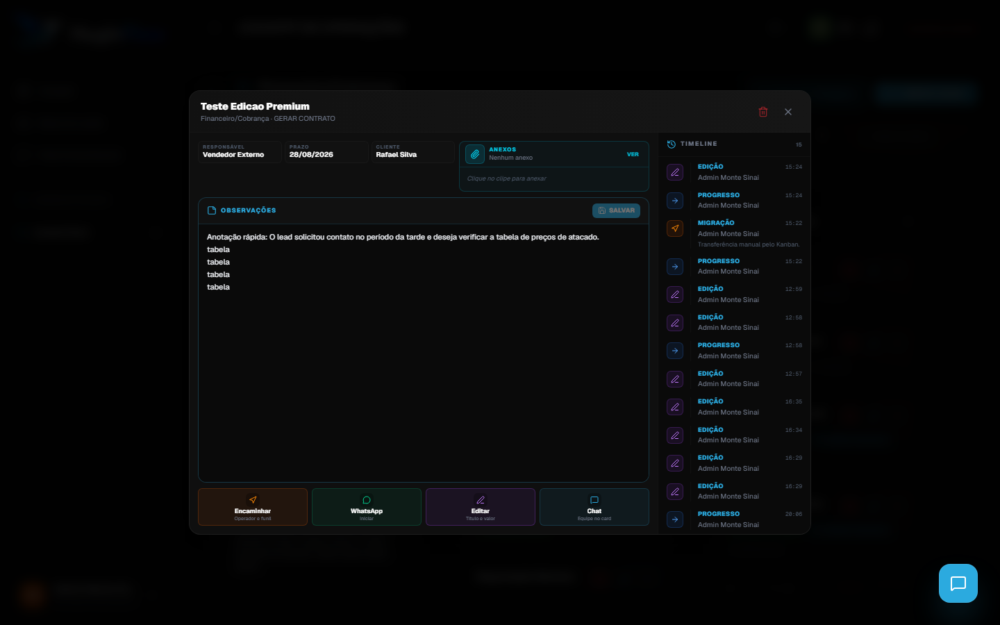

Guia do Operador — Hugin Flow
Aprenda a operar processos e workflows da sua empresa — com WhatsApp como canal de entrada — e consulte este material sempre que precisar.
1. Sobre este guia
O Hugin Flow é um Sistema Operacional de Negócios: uma plataforma para controlar processos e workflows da empresa (vendas, logística, atendimento, operações internas — conforme configurado). Não é um CRM nem uma “plataforma de vendas”; é o motor que organiza como o trabalho flui entre pessoas, etapas e sistemas.
O WhatsApp (e outros canais) é a porta de entrada: mensagens do cliente podem disparar ou alimentar um processo. Como operador, você executa esse fluxo usando principalmente:
- Chat Omnichannel — canal de entrada para conversar com quem iniciou contato pelo WhatsApp (sem substituir o registro do processo no card)
- Funis (Kanban) — quadros de workflow onde cada card representa uma instância do processo (pedido, solicitação, demanda)
- Chat interno — coordenação entre colegas sobre o processo, sem expor nada ao cliente
Este guia não substitui o manual completo da plataforma (ícone ? → Manual do sistema), mas foca no que você precisa para operar workflows no dia a dia.
Atualização set/2026 — pacote CRM: contexto no chat, sessões por departamento, modal do card com observações editáveis, anexos no hub (clipe + lista), ações em uma linha (Encaminhar · WhatsApp · Editar · Chat), encaminhamento com resumo IA, documentos WhatsApp e alertas de canal. Referência técnica: docs/supabase-prod-deploy-pending.md e roteiro de homologação em docs/homologacao/script-teste-pacote-crm-ago-2026.md.
Exercício 1 — Orientação inicial
- Leia o índice à esquerda e identifique as três áreas que você usará todo dia: canal WhatsApp, funil de processos e chat interno.
- Anote qual workflow da empresa costuma começar pelo WhatsApp (ex.: solicitação de orçamento, status de pedido, suporte).
- Confirme com o instrutor ou gestor quem redefine senha se você esquecer.
Concluiu quando: souber onde encontrar cada tema no índice e quem acionar em caso de senha esquecida.
2. Conceitos essenciais
| Termo | O que significa para você |
|---|---|
| Workflow | Processo definido pela empresa (etapas, responsáveis, regras). O funil Kanban é a visualização desse fluxo. |
| Lead | Contato (pessoa ou empresa): nome, telefone, e-mail. Pode ser criado automaticamente quando alguém envia mensagem pelo WhatsApp. |
| Card | Instância de um processo em andamento — um pedido, chamado ou demanda concreta. Tem responsável, etapa atual e histórico (Timeline). |
| Funil / Kanban | Quadro do workflow com colunas (etapas). Você move cards conforme o processo avança. |
| Conversa | Thread de mensagens no canal de entrada (ex.: WhatsApp). Pode existir mais de uma por lead quando há atendimentos em departamentos diferentes. |
| Sessão / sessao_id | Identificador único de cada conversa no OmniChat. Dois cards (Comercial e Financeiro) do mesmo cliente = duas sessões distintas na lista. |
| Falante ativo | Departamento que “segura” o WhatsApp daquele telefone no momento. Outros departamentos podem ter conversa própria, sem misturar histórico. |
| Contexto do cliente | Painel lateral no Chat Omnichannel: cadastro, card deste atendimento, histórico de cards e aviso se outro departamento está ativo. |
| Agente de IA | Respostas automáticas na entrada do canal, antes de um humano assumir o fluxo. |
| Takeover / Gestão Humana | Quando você responde no WhatsApp e passa a conduzir aquela conversa — a IA pausa. |
| Chat interno | Coordenação entre colegas sobre o processo — nunca vai para o WhatsApp do cliente. |
Exercício 2 — Vocabulário do sistema
- Lead — em qual situação você consulta a base de leads?
- Card — o que você registra nele quando o processo avança?
- Takeover — o que muda na tela quando você assume a conversa?
- Chat interno — cite um exemplo de mensagem que não pode ir para o WhatsApp.
Concluiu quando: conseguir explicar com suas palavras os quatro termos acima.
3. Seu perfil de operador
Você entra como Operador. Isso define o que aparece na sua tela:
| Você pode | Depende do grupo de acesso |
|---|---|
| Responder pelo WhatsApp no Chat Omnichannel | Sim (conversas atribuídas a você ou sem responsável) |
| Ver e mover cards no workflow (funil) | Sim, se o grupo permitir cards.view e cards.move |
| Criar novos cards | Se o grupo permitir cards.create |
| Anexar arquivos no card | Se o grupo permitir anexos |
| Usar chat interno | Sim (todos da empresa) |
| Conectar WhatsApp / criar canais | Não — função do gestor ou admin |
| Cadastrar usuários | Não — função do gestor ou admin |
Se aparecer Acesso Interditado ou Acesso Restrito, seu grupo não tem permissão para aquela tela. Peça ao gestor para ajustar em Grupos de Acesso.
Exercício 3 — Seu acesso
- Após entrar, percorra o menu lateral e anote quais itens aparecem para você.
- Tente abrir Funis e Chat Omnichannel — confirme que consegue acessar.
- Verifique se existe item de configuração de canais ou usuários — como operador, normalmente não aparece.
- Se alguma tela bloquear com “Acesso Restrito”, anote o nome e informe ao gestor ao fim da aula.
Concluiu quando: souber exatamente o que seu perfil permite ver e usar hoje.
4. Entrar no sistema
1 Fazer login
- Abra o navegador (Chrome ou Edge recomendados) e acesse
https://app.huginflow.com/login.
Tela de login — logo Hugin Flow e campos de e-mail e senha - Digite o e-mail corporativo que a empresa ou a RN3 cadastrou para você.
- Digite a senha (no primeiro acesso, será a senha padrão entregue pelo gestor).
- Clique em Entrar na plataforma.
- Se tudo estiver correto, você será levado ao Cockpit (painel inicial). O Cockpit do operador mostra atalhos e fila de trabalho; o do gestor mostra KPIs da empresa.
| Mensagem de erro | O que fazer |
|---|---|
| Credenciais inválidas | Confira e-mail e senha (maiúsculas contam). No 1º acesso, use a senha padrão recebida. |
| Acesso suspenso | A empresa está inativa no sistema. Fale com gestor ou RN3. |
Exercício 4 — Primeiro acesso
- Acesse
https://app.huginflow.com/loginem uma aba anônima ou janela normal. - Digite o e-mail corporativo que recebeu (sem espaços antes ou depois).
- Digite a senha padrão entregue pelo gestor.
- Clique em Entrar na plataforma e confirme que o Cockpit carrega.
- Se der erro, leia a mensagem na tela e tente corrigir uma vez antes de pedir ajuda.
Concluiu quando: estiver dentro do Cockpit com seu usuário (nome aparece no rodapé do menu).
5. Alterar senha (obrigatório no 1º acesso)
No treinamento, todos recebem a mesma senha padrão. O sistema obriga a troca no primeiro login: após entrar, você é levado automaticamente à tela Defina sua senha e não consegue usar o restante do Cockpit até concluir.
2 Trocar sua senha
- Faça login com e-mail e senha padrão entregues pelo gestor.
- O sistema abrirá a tela Defina sua senha (título no topo). O menu lateral ficará bloqueado até você concluir.
- Preencha os três campos: Senha atual (a padrão) · Nova senha · Confirmar nova senha
- Use o ícone de olho para mostrar/ocultar a senha enquanto digita.
- Clique em Salvar nova senha.
- Após salvar, você será levado ao Cockpit com acesso liberado. Opcionalmente, faça logout (Encerrar Sessão no topo) e entre de novo com a nova senha para confirmar.
Regras da nova senha
- Mínimo de 6 caracteres
- Deve ser diferente da senha atual
- Os campos Nova senha e Confirmar devem ser iguais
| Mensagem na tela | Significado |
|---|---|
| Senha atual incorreta | A senha padrão foi digitada errada. Tente de novo ou peça ao gestor. |
| A nova senha e a confirmação devem ser iguais | Repita os dois últimos campos igualmente. |
| A nova senha deve ter no mínimo 6 caracteres | Escolha uma senha um pouco mais longa. |
| A nova senha deve ser diferente da senha atual | Não reutilize a senha padrão — crie uma nova. |
Exercício 5 — Troca de senha obrigatória
- Complete o login com a senha padrão até a tela Defina sua senha abrir.
- Crie uma nova senha com pelo menos 6 caracteres, diferente da atual.
- Salve e confirme que o menu lateral deixa de ficar bloqueado.
- Encerre a sessão (Encerrar Sessão no topo) e entre de novo só com a nova senha.
Concluiu quando: fizer login pela segunda vez usando apenas a senha que você criou.
6. Navegação no Cockpit
O menu lateral esquerdo é sua base. Itens mais usados pelo operador:
| Menu | Para quê |
|---|---|
| Cockpit | Painel inicial — visão do dia |
| CRM Workspace | Atalhos do workspace operacional — Funis, Leads e Chat (nome legado do menu; o foco é executar processos) |
| Chat Omnichannel | Canal de entrada — conversas iniciadas pelo WhatsApp e outros canais |
| Funis | Quadros Kanban dos workflows da empresa |
| Base de Leads | Cadastro de contatos vinculados aos processos |


6.1 Menu hambúrguer (sidebar colapsável)
No canto superior esquerdo do Cockpit há um botão de menu hambúrguer (três linhas). Use-o para:
- Recolher o menu lateral e ganhar mais espaço para funil, chat ou kanban
- Expandir de novo quando precisar trocar de módulo
- O conteúdo principal se redimensiona automaticamente — não fica cortado atrás do menu

Exercício 6 — Tour pelo Cockpit
- Clique em Cockpit, depois em Chat Omnichannel, depois em Funis — observe o item ativo ficar destacado em azul.
- Teste o menu hambúrguer: recolha o menu, abra o chat e expanda de novo.
- No topo, clique no ícone ? e confirme que aparecem as opções Manual do sistema e Treinamento do operador.
- Abra o botão flutuante azul (canto inferior direito) e feche sem enviar mensagem — só para memorizar onde fica.
- Clique no seu nome no rodapé do menu e localize Alterar senha.
Concluiu quando: localizar em menos de 10 segundos: menu WhatsApp, funil, ajuda (?) e chat interno.
7. Chat Omnichannel (WhatsApp — canal de entrada)
Ponto de entrada das mensagens: conversas iniciadas pelo WhatsApp (e outros canais configurados) aparecem aqui em tempo real. Cada conversa pode estar ligada a um card de processo — use o chat para falar com quem entrou em contato; use o funil para registrar e avançar o workflow.
3 Abrir o Chat Omnichannel
- No menu lateral, clique em Chat Omnichannel.
- A tela divide em até três colunas: Esquerda: lista de conversas · Centro: mensagens · Direita (opcional): Contexto do cliente
- No topo da lista, use Buscar lead… para achar alguém rapidamente.
- Clique em uma conversa para abrir o histórico no centro.
- No cabeçalho da conversa, use o ícone de painel lateral (direita) para abrir ou fechar o Contexto do cliente.

Exercício 7 — Abrir e localizar conversas
- Abra Chat Omnichannel pelo menu lateral.
- Use Buscar lead… e digite parte do nome ou número de um cliente de exemplo (o instrutor indicará qual).
- Abra a conversa e role o histórico até o início — conte quantas mensagens são do cliente e quantas da IA.
- Identifique se o status atual é Atendimento Robotizado ou Gestão Humana.
Concluiu quando: abrir uma conversa específica pela busca e descrever quem respondeu por último (IA ou humano).
Como ler a conversa
- Mensagens do cliente aparecem de um lado (balão escuro)
- Respostas da IA ou do atendente aparecem do outro (balão azul/verde)
- Respostas da IA são identificadas como Agente de IA
- Suas mensagens saem com seu nome ou como Atendente
7.1 Assumir a conversa (takeover humano)
Quando a IA está atendendo, a conversa fica em Atendimento Robotizado. Para você assumir:
4 Assumir e responder no WhatsApp
- Abra a conversa com indicador Atendimento Robotizado (ícone verde / robô).
- Leia todo o histórico — entenda o que o contato já perguntou e o que a IA já respondeu.
- Clique no campo de texto na parte inferior. O placeholder diz: Responda aqui para assumir o controle… (IA pausará).
- Digite sua mensagem.
- Envie com o botão Enviar Mensagem ou tecla Enter (use Shift+Enter para quebrar linha sem enviar).
- O status muda para Gestão Humana (laranja). A partir daí, você conduz a conversa no canal de entrada.
- A mensagem é entregue no WhatsApp normalmente.

Exercício 8 — Assumir conversa (takeover)
- Escolha uma conversa com status Atendimento Robotizado.
- Leia todo o histórico e escreva em uma frase o que o contato solicita.
- Envie uma mensagem de continuidade (ex.: Olá, [nome]! Sou [seu nome], vou dar sequência na sua solicitação.).
- Confirme que o status mudou para Gestão Humana (laranja).
- Envie uma segunda mensagem usando Shift+Enter para quebrar linha antes de enviar com Enter.
Concluiu quando: o cliente (ou simulador) receber sua mensagem e a tela mostrar Gestão Humana com seu nome.
| Status na tela | Quem responde | Sua ação |
|---|---|---|
| Atendimento Robotizado | Agente de IA | Leia e, quando for atender, responda |
| Gestão Humana | Você ou outro operador | Continue a conversa; atualize o card do processo em paralelo |
7.2 Boas práticas no canal WhatsApp
- Sempre leia o histórico antes de responder — evita repetir perguntas já tratadas pela IA.
- Registre no card decisões, prazos e pendências — o WhatsApp não substitui o workflow.
- Não prometa prazo, valor ou condição sem confirmar no processo — use chat interno ou card para validar com a equipe.
- Mantenha o tom profissional e alinhado à empresa.
- Não use chat interno em telas compartilhadas com o cliente.
Exercício 9 — Boas práticas na resposta
- Releia o histórico de uma conversa que você assumiu no exercício anterior.
- Escreva uma resposta que: (a) não repita pergunta já respondida pela IA; (b) não prometa prazo sem confirmar; (c) mantenha tom profissional.
- Marque com um ✓ o que ficou só no WhatsApp e com um ✗ o que deveria ir para chat interno ou card.
- Troque com um colega: cada um avalia a resposta do outro em 30 segundos.
Concluiu quando: sua resposta estiver adequada para enviar ao cliente real ou ao simulador.
7.3 Painel Contexto do cliente
À direita da conversa (quando aberto), o painel Contexto do cliente reúne informações do lead e dos cards — sem sair do chat.
| Bloco | O que mostra |
|---|---|
| Cadastro | Nome, telefone, WhatsApp, e-mail (quando cadastrados). Link para perfil completo do lead. |
| Card deste atendimento | Card ligado à conversa selecionada — funil, etapa, status aberto/fechado. |
| Últimos atendimentos | Outros cards recentes do mesmo cliente (últimos 90 dias). |
| Outros departamentos | Cards de áreas que você só consulta (visualização parcial, sem editar o funil deles). |
4b Consultar um card pelo painel
- Com uma conversa aberta, abra o painel Contexto do cliente (ícone no cabeçalho da conversa).
- Clique em qualquer card listado — abre um drawer de consulta sobre o chat (não troca de página).
- Leia título, funil, responsável, prazo e histórico (timeline de eventos).
- Se o card for de outro departamento, detalhes internos podem estar ocultos — normal por permissão de área.
- Feche com Esc ou clique fora para voltar à conversa.
Exercício 9b — Contexto e consulta de card
- Abra uma conversa e ative o painel Contexto do cliente.
- Identifique o bloco Card deste atendimento e anote funil + etapa.
- Clique em um card em Últimos atendimentos e leia a timeline no drawer.
- Feche o drawer e confirme que a conversa continua aberta.
Concluiu quando: abrir e fechar a consulta de um card sem perder a conversa selecionada.
7.4 Várias conversas do mesmo lead (por departamento)
Com sessões por departamento, o mesmo cliente pode aparecer duas ou mais vezes na lista — uma conversa por área (ex.: Comercial e Financeiro).
- Selecione a conversa do departamento/funil em que você trabalha.
- O contexto mostra o card correto para esta sessão.
- Se outro departamento estiver ativo no WhatsApp, um aviso amarelo aparece no painel.
- Ao trocar de linha com o mesmo nome, histórico e card mudam — comportamento esperado.
Exercício 9c — Duas conversas, um lead
- Localize duas entradas com o mesmo nome na lista.
- Abra cada uma e compare card e última mensagem.
- Confirme históricos diferentes.
- Volte para a conversa da sua área antes de responder.
Concluiu quando: explicar qual linha é “sua” e por quê.
7.5 Encaminhar card pelo chat
No cabeçalho, Encaminhar (laranja) abre o fluxo do card vinculado — operador, funil ou pipeline.
- Abra conversa com card no contexto.
- Clique Encaminhar.
- Escolha destino (responsável, funil/estágio).
- Em repasse para outro funil, revise o resumo gerado por IA, edite se necessário e confirme (texto mínimo ~20 caracteres).
- A Timeline do card registra a migração.

Exercício 9d — Encaminhar pelo chat
- Clique Encaminhar em conversa de teste.
- Simule repasse (instrutor indica destino).
- Edite uma linha do resumo IA se aparecer.
- Confirme evento na timeline do card.
Concluiu quando: encaminhamento visível no histórico.
7.6 Documentos enviados pelo cliente
Boletos, comprovantes, PDFs e fotos: o sistema processa, exibe na conversa e pode vincular anexo ao card. Confira no modal do card → painel Anexos (topo do hub) ou botão Ver. Documento ilegível → peça reenvio ou registre observação manual.

Exercício 9e — Documento no WhatsApp
- Receba/simule PDF ou imagem.
- Aguarde processamento na bolha.
- Verifique anexo ou observação no card.
Concluiu quando: achar documento na conversa e no card.
Fila do operador
Como operador, você vê conversas:
- Atribuídas a você (
atribuido_a_id= seu usuário), ou - Sem responsável (ainda não pegas por ninguém)
Se não encontrar uma conversa que deveria ver, ela pode estar com outro colega — fale com o gestor.
8. Chat interno da equipe
Canal interno para coordenar a equipe sobre o processo. Quem entrou pelo WhatsApp nunca vê estas mensagens — use quando precisar combinar prazo, validação ou repasse de etapa.
5 Abrir o chat interno
- Em qualquer tela do Cockpit, clique no botão flutuante azul (ícone de mensagem) no canto inferior direito.
- Abre o painel Conversas — lista à esquerda, mensagens à direita.
- Use Buscar chats ou cards… para achar um colega ou um card pelo nome.
- Selecione a conversa na lista e digite sua mensagem no campo inferior.

Exercício 10 — Abrir o chat interno
- Estando em qualquer módulo (ex.: Funis), clique no botão flutuante azul no canto inferior direito.
- Localize o campo Buscar chats ou cards… e digite o nome de um colega da turma.
- Abra a conversa direta (DM) e envie: Teste de treinamento — [seu nome].
- Feche o painel e abra de novo — confirme que a conversa continua na lista.
Concluiu quando: enviar e receber confirmação visual da mensagem na thread DM.
Três formas de conversar internamente
| Tipo | Como identificar | Quando usar |
|---|---|---|
| Conversa direta (DM) | Avatar com iniciais do colega; bolinha verde de “online” | Dúvida rápida, repasse urgente, alinhamento 1:1 |
| Thread do card | Ícone # laranja e etiqueta Card na lista | Discutir aquele processo/pedido com toda a equipe envolvida |
| Chat privado ligado ao card | Aberto a partir do modal do card → aba Chat Interno → ícone de mensagem ao lado do responsável | Falar só com o responsável sobre aquele card |
8.1 Avisos quando há mensagens internas
Enquanto você trabalha em qualquer tela, o sistema avisa quando chegam mensagens internas:
- Badge vermelho no botão flutuante — número total de mensagens não lidas em todas as conversas.
- Badge na lista — cada conversa com pendência mostra um contador vermelho ao lado da última mensagem.
- Ao abrir e ler a conversa, o contador zera automaticamente para aquela thread.
@ — assim você vê o badge aparecer e pratica abrir o painel.
Exercício 11 — Badge de não lidas
- Feche o painel de chat interno (se estiver aberto) e peça ao colega para enviar uma DM para você.
- Observe o badge vermelho no botão flutuante — anote o número exibido.
- Abra o painel, clique na conversa e leia a mensagem.
- Confirme que o badge da conversa e o do botão flutuante diminuem ou zeram.
Concluiu quando: identificar uma mensagem não lida só pelo badge, antes de abrir o painel.
8.2 Abrir e encaminhar um card pelo chat interno
Quando alguém menciona um card com # ou quando a conversa já é uma thread de card, você pode ir direto à gestão completa:
6 Ir do chat interno para o card
- No painel Conversas, selecione uma thread com etiqueta Card (ícone laranja #).
- No topo da área de mensagens, clique em Gestão do Card (botão laranja com ícone de link externo).
- Abre o modal do card — hub com responsável, prazo, cliente, observações editáveis, ações rápidas e Timeline à direita.
- Para encaminhar: use o botão laranja Encaminhar no hub ou repasse pelo chat Omnichannel (§7.5).

Você também pode buscar o card pelo campo Buscar chats ou cards… — a busca encontra cards pelo título mesmo que ainda não tenham mensagens recentes.
Exercício 12 — Do chat interno ao card
- No painel de chat interno, localize uma conversa com etiqueta Card (ícone laranja #) — o instrutor indicará qual card usar.
- Clique em Gestão do Card no topo da thread.
- No modal, identifique: metadados + painel de Anexos (topo), bloco Observações com Salvar, linha de ações (Encaminhar · WhatsApp · Editar · Chat) e coluna Timeline.
- Escreva uma linha nas observações e salve — confirme na Timeline evento de edição.
Concluiu quando: abrir o modal completo do card a partir do chat interno em um único fluxo.
8.3 Marcar colega ou card (@ e #)
7 Mencionar no chat interno global
- No campo de mensagem, digite
@seguido do nome — aparece a lista Mencionar Contato. - Use as setas ↑ ↓ para navegar, Enter para escolher ou Esc para fechar a lista.
- O nome vira
[Nome Completo]na mensagem (formato interno do sistema). - Digite
#para referenciar um card — escolha na lista Mencionar Card; vira[Card: Título]. - Envie a mensagem. Colegas mencionados com
@entram na sua lista e podem filtrar por Mencionados dentro da thread.

@ ou # — lista de contatos e cards| Atalho | Resultado na mensagem | Efeito |
|---|---|---|
@Maria | [Maria Silva], | Notifica / destaca o colega |
#Pedido | [Card: Pedido 4521], | Vincula visualmente o card (destaque laranja) |
Exemplo completo: Preciso de ajuda [Maria Silva], sobre prazo do [Card: Pedido 4521], cliente aguardando no WhatsApp.
Exercício 13 — Menções @ e # no chat global
- Abra uma DM ou thread de card e digite
@+ letras do nome de um colega — selecione na lista com Enter. - Na mesma mensagem, digite
#+ parte do título de um card — selecione na lista. - Envie a mensagem e confirme que aparecem os formatos
[Nome]e[Card: …]. - Peça ao colega mencionado para abrir a thread e usar o filtro Mencionados (se disponível).
Concluiu quando: uma mensagem sua contiver ao mesmo tempo menção a pessoa e a card.
8.4 Avisos quando alguém altera seu card
Se você é responsável por um card e outro colega (ou a IA) altera observação, move etapa, troca responsável ou anexa arquivo, você recebe aviso no chat interno do card (menção automática). Responda na thread do card — não no WhatsApp.

9. Cards e funil (Kanban — workflow)
Cada instância de processo importante vira um card no funil. Você move o card entre etapas (colunas) conforme o workflow avança. O card concentra dados do contato, histórico (Timeline), anexos, chat interno da equipe e vínculo com a conversa de WhatsApp.
8 Abrir o funil
- Menu → Funis (ou CRM Workspace → Funis).
- Na lista, clique no workflow da sua empresa (ex.: Pedidos, Solicitações, Pós-venda — nomes variam por configuração).
- Você verá colunas como TRIAGEM, EM ANDAMENTO, CONCLUÍDO (nomes podem variar).
- Cada cartão na coluna é um card.

9 Mover um card de etapa
- Clique e segure o card na coluna atual.
- Arraste até a coluna da nova etapa.
- Solte o mouse. O card muda de etapa e o sistema registra na Timeline.
?cardId= compartilhado pela equipe.

Exercício 14 — Navegar no funil
- Abra o funil indicado pelo instrutor e ative o filtro Meus Cards.
- Localize um card atribuído a você (ou use o card de demonstração).
- Arraste o card para a coluna seguinte e solte — confirme que ele permanece na nova etapa após atualizar a página.
- Abra o modal pelo ícone Gestão do Card (lápis azul — não clique só no título).
- Na Timeline, encontre o registro da movimentação que você acabou de fazer.
Concluiu quando: mover um card de etapa e ver o evento correspondente na Timeline.
9.0 Modal do card (layout atual)
Ao abrir o card (ícone Gestão do Card no Kanban ou no chat interno), você vê um hub compacto:
| Área | Conteúdo |
|---|---|
| Topo | Título do card, funil · etapa, excluir/fechar |
| Metadados + Anexos | À esquerda: Responsável · Prazo · Cliente (compactos). À direita: painel Anexos com ícone de clipe, lista dos arquivos e botão Ver |
| Observações | Campo grande editável + botão Salvar (indica “não salvo” se alterou) |
| Ações (1 linha) | Quatro botões compactos: Encaminhar (laranja) · WhatsApp (verde) · Editar (lilás) · Chat (azul) |
| Timeline | Coluna direita — criação, edições, migrações, anexos |

Exercício 14b — Observações no hub
- Abra modal de card de teste (ícone Gestão do Card).
- Escreva observação no bloco central e clique Salvar.
- Confirme evento na Timeline.
- Feche e reabra — texto deve permanecer.
Concluiu quando: salvar observação sem entrar em Editar dados.
9.1 Canal WhatsApp ↔ card do processo
A conversa de WhatsApp e o card ficam conectados quando o workflow da empresa cria lead e card automaticamente na entrada (configuração do canal). Sua rotina:
- Converse no Chat Omnichannel (§7).
- No funil, localize o card (filtro Meus Cards ou busca).
- Expanda o tile (▼) no Kanban.
- Se já houver conversa: botão verde WhatsApp abre a thread vinculada.
- Se não houver conversa: botão Iniciar conversa — digite a primeira mensagem; o sistema cria a sessão e preenche
conversa_idno card. - Registre no card o combinado: observações no hub do modal (§9.0) ou consulta pelo painel de contexto no chat.

Exercício 15 — WhatsApp e card juntos
- No Chat Omnichannel, retome a conversa que você assumiu no exercício 8.
- No funil, encontre o card do mesmo cliente (busca ou Meus Cards).
- Expanda o tile (▼) e use WhatsApp ou Iniciar conversa conforme o caso.
- No modal (Gestão do Card), salve uma observação no hub sobre o que foi combinado.
Concluiu quando: observação salva no card refletir o que foi tratado na conversa de WhatsApp.
9.2 Encaminhar processo para outro responsável
Quando outro colega deve executar a próxima etapa:
- Abra o modal do card (ícone Gestão do Card) ou use Encaminhar no chat Omnichannel.
- Clique em Encaminhar (laranja) no hub do modal.
- Selecione operador, funil/estágio ou pipeline conforme a tela de encaminhamento.
- Deixe contexto nas observações (hub) ou no resumo IA ao migrar de funil.
- Na thread do card no chat interno, use
@para avisar o novo responsável.

Exercício 16 — Encaminhar para colega
- Abra card de teste → Encaminhar no hub.
- Altere responsável para o colega (instrutor valida).
- Documente repasse nas observações e no chat interno com
@. - O colega confirma em voz alta que viu a menção e o card na lista dele.
Concluiu quando: o colega souber assumir o caso só pela mensagem interna + responsável atualizado.
9.3 Enviar card para outro pipeline (funil) — resumo IA
Quando o processo muda de área (ex.: Comercial → Financeiro), use Encaminhar e escolha outro pipeline/funil:
- Abra o modal → Encaminhar (hub) ou botão no chat.
- Selecione Pipeline / funil destino e estágio inicial.
- O sistema gera resumo com IA a partir da conversa e do card — revise e edite antes de confirmar.
- Confirme a transferência. O card sai deste funil e aparece no destino; Timeline registra Migração.
- Urgência pode ser marcada no fluxo (normal / alta) — conforme tela de encaminhamento.

Exercício 17 — Transferir de pipeline (observação)
- Abra modal → Encaminhar e localize opção de mudar funil/pipeline.
- Se instrutor liberar, transfira card demo e edite uma linha do resumo IA.
- Se a empresa tiver só um funil, descreva em uma frase quando você usaria essa função no dia a dia.
Concluiu quando: souber onde fica a transferência e qual funil/stágio escolheria em um caso real.
9.4 Enviar mensagem no chat interno do card
Cada card tem uma thread interna visível só para a equipe:
- Abra modal → botão azul Chat no hub (linha de ações).
- Digite a nota para a equipe e envie — não vai para o WhatsApp do cliente.
- Use os filtros Todos / Mencionados para ver só mensagens em que você foi citado.
- A mesma thread aparece no painel flutuante de chat interno (§8), com etiqueta Card.
@ ou # no campo inferiorExercício 18 — Chat interno dentro do card
- Abra modal → Chat (azul) no hub.
- Envie nota para a equipe (ex.: Cliente pediu segunda via de boleto.).
- Abra o painel flutuante de chat interno e confirme que a mesma thread aparece com etiqueta Card.
- Alterne o filtro Todos / Mencionados e observe a diferença.
Concluiu quando: a mensagem enviada no modal aparecer também no painel flutuante.
9.5 Marcar usuário ou card (@ e #)
Dentro do chat interno do card (ou no painel global), use os caracteres especiais:
@+ nome → autocomplete → vira[Nome do Colega],#+ título → autocomplete → vira[Card: Título],- Atalhos: ↑ ↓ navegar lista · Enter confirmar · Esc fechar

@ no chat do card — colega recebe destaque na threadExercício 19 — Menções no chat do card
- Na tela de chat interno do card, mencione um colega com
@. - Mencione outro card relacionado com
#(se existir na lista). - Peça ao colega para responder na mesma thread.
Concluiu quando: colega responder na thread do card sem você precisar usar WhatsApp.
9.6 Anexar documentos no card
- Abra o modal do card (ícone Gestão do Card).
- No topo, à direita dos metadados, use o painel Anexos: Clipe: seleciona e envia um arquivo · Lista: mostra os já anexados · Ver: abre a tela completa de anexos
- Na tela completa (ou pelo clipe), envie PDF, PNG, JPG, DOC, DOCX, XLS ou XLSX.
- Tamanho máximo: 5 MB por arquivo.
- Baixe pelo ícone de download ou remova pela lixeira (se sua permissão permitir).
- Cada anexo gera evento na Timeline (Anexo / Remoção).
Exercício 20 — Anexar documento
- Peça ao instrutor um PDF ou imagem de teste (ou use um print da tela).
- No hub do card, clique no clipe do painel Anexos (ou em Ver e depois anexe).
- Aguarde o upload: o arquivo deve aparecer na lista do hub e na Timeline.
- Teste o download pelo ícone correspondente.
Concluiu quando: o anexo aparecer na lista do hub e na Timeline do card.
Outras ações no card
| Ação | Onde |
|---|---|
| Observações / briefing | Hub → bloco Observações → Salvar |
| Anexar / baixar arquivos | Hub → painel Anexos (clipe ou Ver) |
| Editar título, valor, descrição | Hub → botão lilás Editar |
| Chat da equipe no card | Hub → botão azul Chat |
| Finalizar / Reabrir | Ícone ✓ no tile (vermelho = aberto, verde = finalizado) |
| Data/hora de criação | Rodapé do tile: Hoje 14:32, Ontem ou dd/MM HH:mm; expandido mostra “Criado em …” com hora |
| Iniciar conversa WhatsApp | Tile expandido ou botão verde WhatsApp no hub |
| Ver histórico | Timeline no modal ou drawer de consulta no chat |
| Criar card novo | Novo Card no funil (se cards.create) |
9.7 Filtros útiles no funil
No topo do funil:
| Filtro | Função |
|---|---|
| Meus Cards | Mostra só cards onde você é responsável |
| Exibir Finalizados | Inclui cards já encerrados |
| Prazo / Entrou no Estágio | Filtra por datas |
| Filtros Ativos | Indica que algum filtro está ligado |
Exercício 21 — Filtros do funil
- Ative Meus Cards e conte quantos cards aparecem.
- Desative o filtro e compare a quantidade total visível.
- Ative Exibir Finalizados (se disponível) e localize um card encerrado (ícone ✓ verde).
- Restaure os filtros ao padrão que você usa no dia a dia.
Concluiu quando: explicar a diferença entre ver “só meus” e ver “todos os cards do funil”.
10. Fluxo do dia a dia (workflow completo)
Referência do ciclo processo + canal de entrada — use quando não souber o próximo passo:
- Troquei a senha padrão no primeiro acesso
- Li o histórico antes de responder no WhatsApp
- Assumi a conversa (Gestão Humana) quando fui atender
- Consultei o painel Contexto do cliente quando relevante
- Escolhi a conversa correta quando o lead tinha mais de uma linha
- Salvei observações no hub do card
- Usei chat interno para dúvidas com a equipe
- Salvei anexos importantes no card
- Card na etapa certa ou finalizado
Exercício 22 — Simulação integrada (desafio final)
- Receba no WhatsApp (ou simulador) uma mensagem de cliente pedindo informação que você não tem (ex.: prazo ou estoque).
- Assuma a conversa, responda que vai confirmar e registre no card.
- Use chat interno do card com
@para pedir ajuda a um colega ou área. - Quando tiver a resposta, volte ao WhatsApp e informe o cliente.
- Atualize observações, mova o card de etapa e anexe comprovante se aplicável.
Concluiu quando: completar o fluxo da caixa acima sem pular etapa (WhatsApp → card → interno → WhatsApp → funil).
11. Cenários práticos
Cenário A — Cliente pergunta prazo de entrega no WhatsApp
- Abra a conversa no Chat Omnichannel.
- Assuma e responda: Vou confirmar e já retorno.
- Abra o card do cliente no funil.
- No chat interno do card, escreva: @Logística, qual prazo do [Card: …]?
- Quando souber a resposta, volte ao WhatsApp e informe o cliente.
- Registre a resposta nas observações do card.
Cenário B — Novo contato pelo WhatsApp; IA já respondeu na entrada
- Veja conversa em Atendimento Robotizado.
- Leia o que a IA respondeu — mantenha consistência com o workflow.
- Assuma com mensagem personalizada (nome do contato, próximo passo claro).
- Verifique se já existe card do processo; se sim, atualize responsável para você.
- Avance o workflow movendo o card e anotando prazos nas observações.
Cenário C — Passar caso para outro colega
- Use Encaminhar no hub ou no chat; confirme resumo IA se mudou de funil.
- No chat interno do card, explique o contexto do processo: solicitação, histórico e pendências.
- Se necessário, avise o colega com
@no chat interno. - A conversa no WhatsApp pode continuar com o novo responsável quando ele assumir.
Cenário D — Mesmo cliente, Comercial e Financeiro
- Na lista do chat, identifique duas conversas com o mesmo nome.
- Abra a do seu departamento; confira Card deste atendimento no contexto.
- Responda só na sessão correta; use consulta de card para ver o outro funil sem editá-lo.
- Se precisar repassar entre áreas, use Encaminhar com resumo IA revisado.
Cenário E — Cliente envia boleto ou comprovante
- Veja o documento na conversa (status processando → concluído).
- Abra o card e confirme anexo ou observação gerada.
- Se ilegível, peça reenvio pelo WhatsApp e registre nas observações.
Exercício 23 — Role-play dos cenários A–E
- Grupo 1: Cenário A (prazo de entrega).
- Grupo 2: Cenário B (IA na entrada) + E (documento).
- Grupo 3: Cenário C (repasse) ou D (multi-departamento).
- Cada grupo apresenta em 2 minutos o que fez e onde teve dúvida.
Concluiu quando: seu grupo completar um dos três cenários sem ajuda do instrutor na segunda tentativa.
12. Problemas comuns
| Problema | Solução |
|---|---|
| Esqueci minha senha | Peça ao gestor ou RN3 redefinir em Usuários → Editar. Não há link “esqueci senha” no login. |
| Não acho uma conversa no WhatsApp | Busque por telefone/nome. Pode estar atribuída a outro operador — fale com o gestor. |
| IA ainda responde depois que assumi | Confirme se o status é Gestão Humana. Se persistir, avise o gestor/RN3. |
| Cliente não recebeu minha mensagem | Verifique conexão do canal (gestor). Veja se aparece “Enviando…” ou erro na thread. |
| Não consigo mover card | Seu grupo pode não ter permissão cards.move. Peça ao gestor. |
| Não vejo botão Novo Card | Permissão cards.create ausente — peça ao gestor. |
| Anexo não sobe | Arquivo maior que 5 MB ou formato bloqueado. Reduza ou converta o arquivo. |
| Chat interno — colega não respondeu | Use @ com o nome. Em urgência, ligue ou fale pelo canal oficial da empresa. |
| Tela “Acesso Restrito” | Sem permissão para aquela função. Gestor ajusta Grupos de Acesso. |
| Lista mostra o mesmo cliente duas vezes | Normal com sessões por departamento — escolha a linha da sua área (§7.4). |
| Cliquei na conversa errada e voltou sozinha | Evite links antigos com ?sessao= de outra área — selecione manualmente na lista. |
| Modal de canal WhatsApp desconectado | Canal caiu — avise o gestor para reconectar em Configurações. Não ignore o alerta. |
| Resumo IA no encaminhamento errado | Edite o texto antes de confirmar — você é responsável pelo conteúdo final. |
| Consulta de card “visualização parcial” | Card de outro departamento — você vê metadados, não detalhes internos sensíveis. |
Para mais detalhes, use o manual completo: ícone ? no Cockpit ou peça ajuda ao suporte.
12.1 Alertas do sistema
| Alerta | O que fazer |
|---|---|
| Modal — canal WhatsApp desconectado | Informe o gestor. Mensagens podem falhar até reconectar o canal. |
| Aviso amarelo — outro departamento ativo | Leia no contexto; responda na sessão do seu funil. |
| Menção no chat interno do card | Alguém alterou ou comentou seu card — abra a thread. |
| Observações · não salvo | Clique Salvar no hub antes de fechar o modal. |
13. Glossário
| Termo | Definição |
|---|---|
| Cockpit | Painel principal após login |
| CRM Workspace | Atalhos do workspace operacional (Funis, Leads, Chat) — nome do menu; foco em executar workflows |
| Omnichannel | Canais de entrada (WhatsApp, etc.) reunidos no mesmo chat |
| Takeover | Operador assume conversa da IA ao responder no canal de entrada |
| Pipeline / Funil | Sequência de etapas de um workflow |
| Workflow | Processo de negócio modelado em etapas, responsáveis e regras |
| Estágio / Coluna | Etapa do funil onde o card está |
| Timeline | Histórico de eventos do card |
| DM | Mensagem direta entre dois usuários no chat interno |
| Sessão (sessao_id) | Identificador único de uma conversa no OmniChat — um lead pode ter várias |
| Falante ativo | Departamento que concentra o WhatsApp daquele telefone no momento |
| Contexto do cliente | Painel lateral no chat com cadastro, cards e avisos |
| Consulta de card | Drawer read-only para ler card sem sair do chat |
| Encaminhar | Repasse de card — operador, funil ou pipeline, com resumo IA quando cross-funil |
| Grupo de acesso | Conjunto de permissões do seu usuário |
Apêndice A — Roteiro da aula online (2h)
Roteiro atualizado para o pacote CRM set/2026 (contexto no chat, multi-departamento, modal do card, encaminhamento IA).
| Horário | Tópico | Seção / exercício |
|---|---|---|
| 0:00 – 0:15 | Login, senha, tour Cockpit + menu hambúrguer | §4–6 · Ex. 4–6 |
| 0:15 – 0:40 | Chat: assumir, contexto, multi-sessão | §7 · Ex. 7–9c |
| 0:40 – 0:55 | Encaminhar pelo chat, documentos | §7.5–7.6 · Ex. 9d–9e |
| 0:55 – 1:15 | Chat interno, menções, avisos ao responsável | §8 · Ex. 10–13 |
| 1:15 – 1:45 | Funil, modal hub, observações, encaminhar IA | §9 · Ex. 14–21 |
| 1:45 – 2:00 | Desafio integrado (cenários A–E) | §10–11 · Ex. 22–23 |
Apêndice B — Checklist do operador
Imprima ou salve este checklist. Marque a cada execução de processo. Se completou os 27 exercícios (incl. 9b–9e e 14b), você está pronto para operar com supervisão mínima.
- Senha pessoal definida (não uso mais a padrão)
- Li o histórico completo da conversa
- Status Gestão Humana quando estou atendendo
- Escolhi a conversa correta quando havia mais de uma linha do mesmo lead
- Salvei observações no hub do card
- Chat interno usado para dúvidas com a equipe
- Anexos salvos no card quando relevante
- Card na etapa correta ou finalizado
- Logout ao sair (Encerrar Sessão)